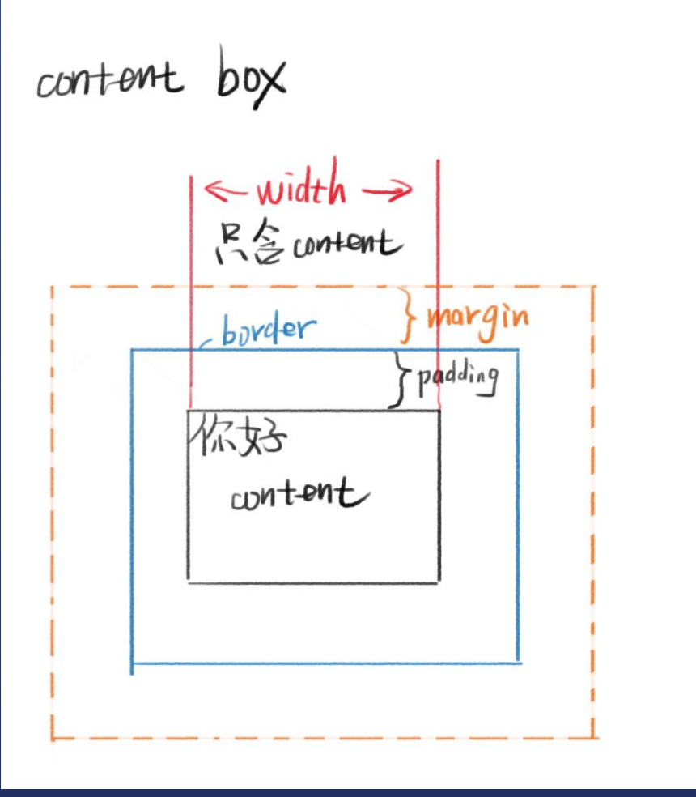
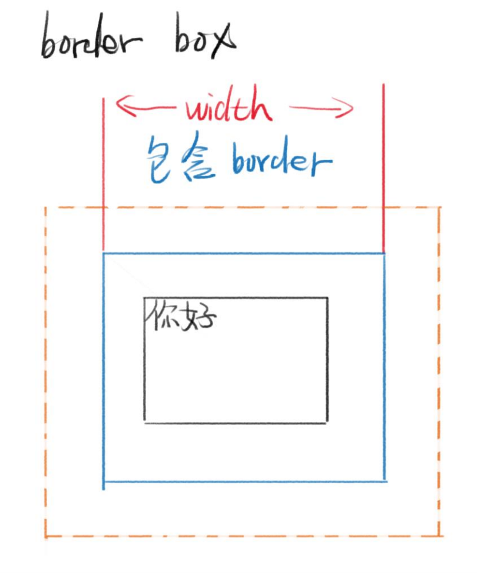
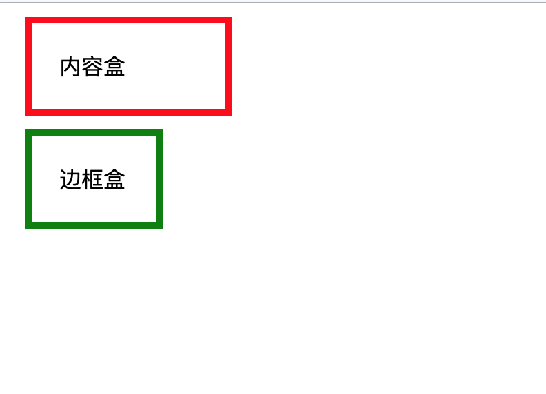

POSTS
CSS盒模型
CSS盒模型
盒模型是CSS的重点之一，也是难点之一
CSS盒模型本质上是一个盒子，封装周围的HTML元素，它包括：边距，边框，填充，和实际内容。
盒模型允许我们在其它元素和周围元素边框之间的空间放置元素。
当我们在浏览器中按下F12 就可以看到元素的盒模型

盒模型基本元素:
- 宽度:width
- 高度height
- 边距:margin
- 边框:border
- 内边距:padding(一个元素的内容和其边界之间的空间)
- 内容区content
盒模型的分类:
盒模型分为content-box和border-box两种
在声明时用box-sizing:content-box/border-box来声明
content-box:
content-box是指内容盒，内容就是盒子的边界
在content-box中
width = 内容的宽度
盒子的大小 = border + padding + 内容的宽度

border-box:
border-box是指边框盒，边框才是盒子的边界
在border-box中
width = border + padding + 内容区
盒子的大小 = width

用实际体会一下两者的不同:
<body>
<div class="content-box">内容盒</div>
<div class="border-box">边框盒</div>
</body>
.content-box{
margin: 10px;
padding:20px;
border:5px solid red;
box-sizing:content-box;
width: 100px;
}
.border-box{
margin: 10px;
padding:20px;
border:5px solid green;
box-sizing:border-box;
width: 100px;
}
在这两种不同的盒模型中，div的显示效果如图
